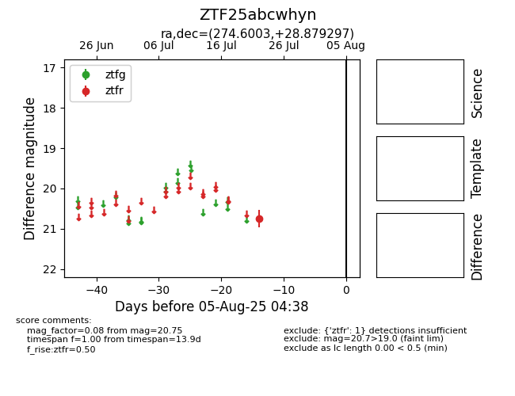

Target ZTF25abcwhyn at 2025-08-05 04:38, see:
FINK: fink-portal.org/ZTF25abcwhyn
Lasair: lasair-ztf.lsst.ac.uk/objects/ZTF25abcwhyn
ALeRCE: alerce.online/object/ZTF25abcwhyn
alt names
ZTF25abcwhyn (ztf,fink)
coordinates:
equatorial (ra, dec) = (274.6003,+28.87930)
galactic (l, b) = (56.1917,+19.40072)
photometry
last ztfr=20.75
1 ztfr detections
